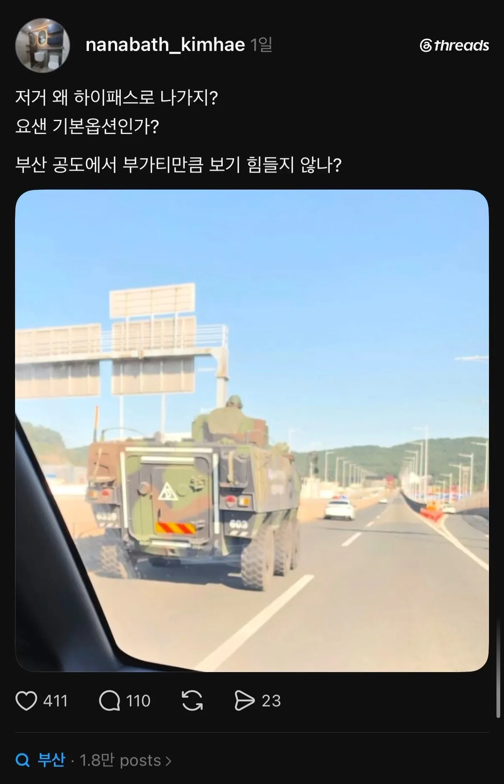

장갑차가 왜 하이패스로 나가죠?
댓글
자본가 = 화학적 전지전능
폭력가 = 물리적 전지전능
완력가
징수 해보든가 ㅋㅋㅋ
탱크가 사고싶어
ㄴ사면 되잖아?
돈이 없어
ㄴ빌리면 되잖아?
은행에서 안 빌려줘
ㄴ사채 쓰면 되잖아?
이율이 너무 높아
ㄴ안 갚으면 되잖아?
조폭들이 날 찾아올 거야
ㄴ넌 탱크가 있잖아?
ㄴ 그럴줄 알고 탄약은 안팔았다 ...
차륜형 장갑차네 저건 차랑 조작감이 똑같으려나
기갑특기라 궤도장갑차 몰고 공도 이동 해봤는데
생각보다 일반 차량들이 겁이 없더라
앞에 막 끼어들고 옆 뒤에 바짝 붙고
죽일까봐 무서웠음
나도 k200몰았는데 도로에서 차들이 엄청 배려해주던데
나도 떼빙하는데
그 사이로 끼어들면
죽일까봐 오줌 지렸다 ㅠㅠ
부가티보다 더 자주볼수잇지
나때 군대차는 하이패스로는 못가고 현금차로로 갔는데 톨줌마가 슥 보고 빨리꺼지라고 휘적휘적 손짓함 그래야 지나갈수있었음
ㅋㅋㅋㅋ 휘적휘적ㅋㅋㅋㅋ
23군번 운전병인데 코로나 이후로 작전차량은 그냥 하이패스로 통과해도 되더라고요
요즘은 그렇구나 18군번인데 우리는 그냥 종이 뽑아서 그대로 줬었는데 ㅋㅋ
프리패스 안시켜주면 프리파이어
나 몰던 1호차는 그냥 하이패스 통과함
하이패스 안달려있었는데 나중에 청구됐는진 몰루?
요즘도 통제 좆까고 장갑차나 탱크 추월하는 사람들 있나??
꼬우면 막아서보던가
패스 안시켜주면 ㅈ될거같음